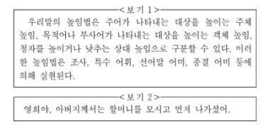

14. <보기1>을 바탕으로 <보기2>의 높임 표현을 바르게 분석한 것은?(순서대로 주체 높임, 객체 높임, 상대 높임)
1. 주체 높임:O, 객체 높임:O, 상대 높임: 높임
2. 주체 높임:O, 객체 높임:O, 상대 높임: 낮춤
3. 주체 높임:O, 객체 높임:x, 상대 높임: 높임
4. 주체 높임:x, 객체 높임:O, 상대 높임: 낮춤
5. 주체 높임:x, 객체 높임:x, 상대 높임: 높임